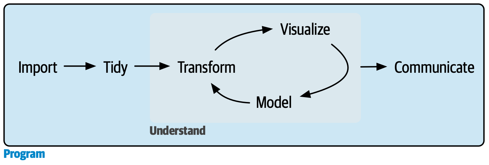
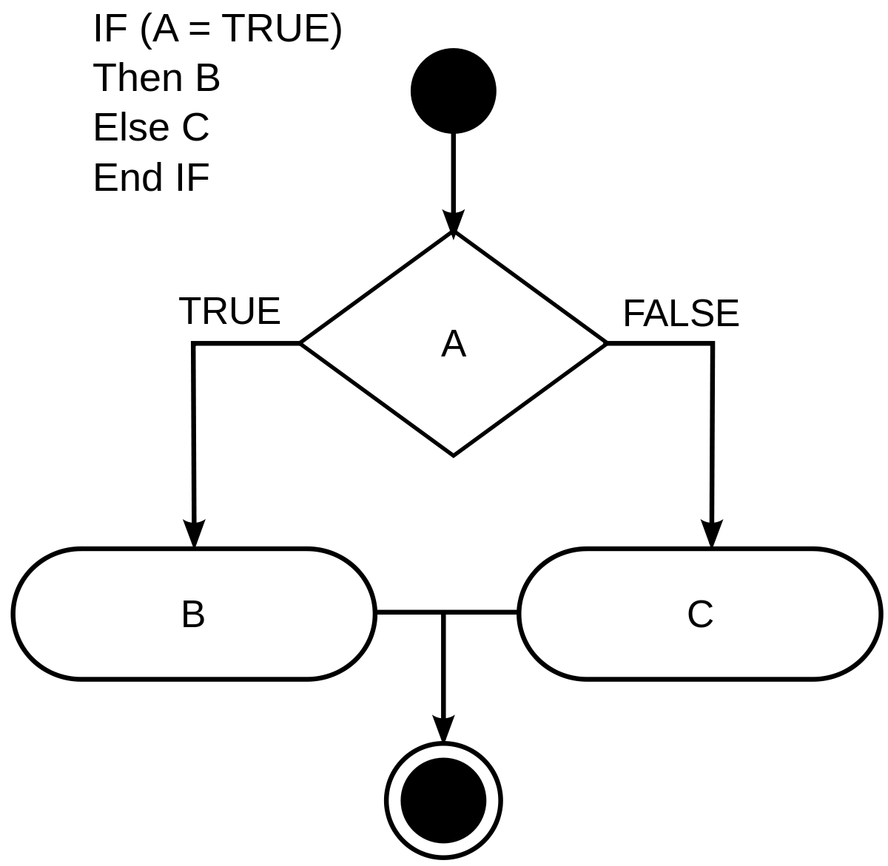
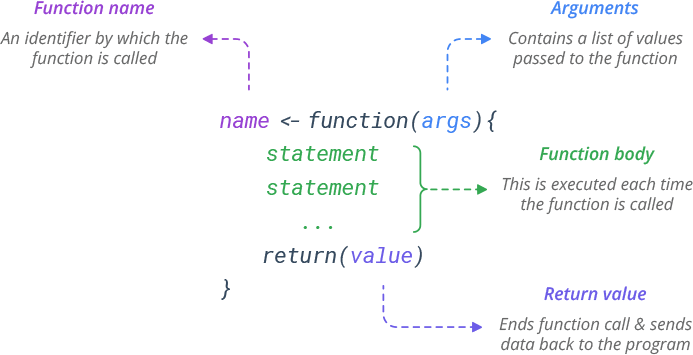
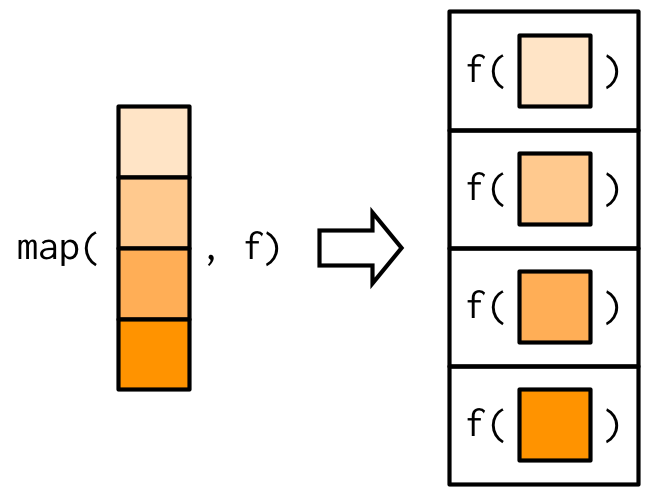
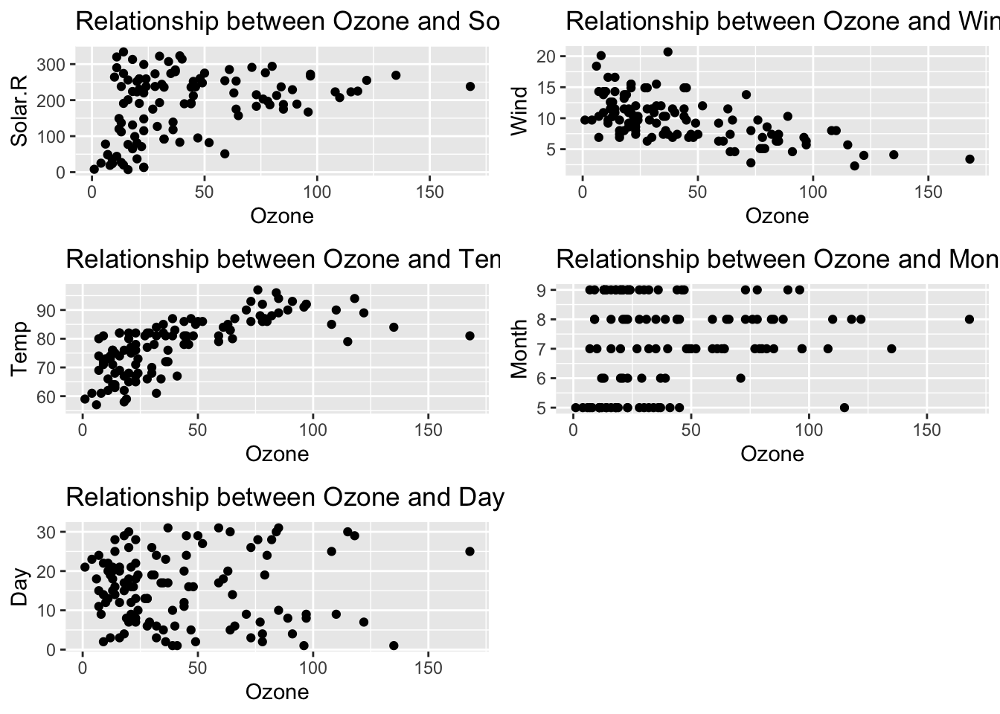

# Install packages
if (!require("pacman")) {
install.packages("pacman")
}
pacman::p_load(
tidyverse, # tidyverse pkgs including purrr
glue, #combining strings and objects
gapminder, # dataset
ggplot2, #plotting
gridExtra #arranging plots
) 🗓️ Week 04
Automating – Functional Programming
Conditional Flow
Programming in R
Repeating yourself in code is dangerous because it can easily lead to errors and inconsistencies
While the syntax might vary, the basic idea of flow, functions, and iteration are common across all programming languages (e.g. Python)

Setup
Flow control
- Sometimes you only want to execute code if a certain condition is met (if-else statement)
if (condition) {
# Code executed when condition is TRUE
} else {
# Code executed when condition is FALSE
}- Condition is a statement that must always evaluate to either TRUE or FALSE (i.e. a vector of length 1)

Flow control (examples)
average = 72
if (average > 69) {
print("First-class honours")
} else {
print("Second-class honours")
}[1] "First-class honours"average = 69
if (average > 69) {
print("First-class honours")
} else {
print("Second-class honours")
}[1] "Second-class honours"What would you do with multiple conditions?
if (this) {
# Do that
} else if (that) {
# Do something else
} else {
# Do something completely different
}Going back to earlier one-condition example
- You can generate more complex conditional statements with Boolean operators like & and |:
average = 50
if (average > 69) {
print("Firs-class honours")
} else if (average < 70 & average > 59) {
print("Second-class honours")
} else {
print("Third-class honours")
}[1] "Third-class honours"It’s not a good idea to write nested code (lots of
else_if()orifelse())It is not easy to read or debug
Coding style MATTERS!
- Both the “if” and “function” statements should almost always be accompanied by curly braces
{},and the code within them should be indented. Start opening curly braces on a new line, close them on their own line, except when followed by “else,” and maintain code indentation inside them
# Bad example
if (y < 0 && debug)
message("Y is negative")
if (y == 0) {
log(x)
}
else {
y ^ x
}
# Good example
if (y < 0 && debug) {
message("Y is negative")
}
if (y == 0) {
log(x)
} else {
y ^ x
}if vs if_else
Vector operations are where you make multiple comparisons simultaneously for each value stored inside a vector
Imagine you wanted to create a new column identifying whether or not a country-year observation has a life expectancy of at least 35
gap <- gapminder
head(gap)# A tibble: 6 × 6
country continent year lifeExp pop gdpPercap
<fct> <fct> <int> <dbl> <int> <dbl>
1 Afghanistan Asia 1952 28.8 8425333 779.
2 Afghanistan Asia 1957 30.3 9240934 821.
3 Afghanistan Asia 1962 32.0 10267083 853.
4 Afghanistan Asia 1967 34.0 11537966 836.
5 Afghanistan Asia 1972 36.1 13079460 740.
6 Afghanistan Asia 1977 38.4 14880372 786.gap_if <- gap %>%
mutate(life.35 = if(lifeExp >= 35){
1
} else {
0
})
head(gap_if)- Try this code and tell us what you think it’s wrong
Use if_else() instead
- This vectorises the if-else comparison and makes a separate comparison for each row of the data frame
gap_ifelse <- gap %>%
mutate(life.35 = if_else(lifeExp >= 35, 1, 0))
gap_ifelse# A tibble: 1,704 × 7
country continent year lifeExp pop gdpPercap life.35
<fct> <fct> <int> <dbl> <int> <dbl> <dbl>
1 Afghanistan Asia 1952 28.8 8425333 779. 0
2 Afghanistan Asia 1957 30.3 9240934 821. 0
3 Afghanistan Asia 1962 32.0 10267083 853. 0
4 Afghanistan Asia 1967 34.0 11537966 836. 0
5 Afghanistan Asia 1972 36.1 13079460 740. 1
6 Afghanistan Asia 1977 38.4 14880372 786. 1
7 Afghanistan Asia 1982 39.9 12881816 978. 1
8 Afghanistan Asia 1987 40.8 13867957 852. 1
9 Afghanistan Asia 1992 41.7 16317921 649. 1
10 Afghanistan Asia 1997 41.8 22227415 635. 1
# ℹ 1,694 more rowsFunctions
Functions
Functions are the basic building blocks of programmes
Think of them as mini-scripts. R provides many built-in functions and allows programmers to define their own functions. We have already used dozens of functions created by others (e.g.
filter()andsd())You will learn how to write you own functions. The details are pretty simple, yet as usual it is good to get lots of practice!

Why we need functions
- Functions allow you to automate common tasks in a more powerful and general way than copy-and-pasting
gap <- gapminder
gap_norm <- gap %>%
mutate(pop_norm = (pop - min(pop)) / (max(pop) - min (pop)),
gdp_norm = (gdpPercap - min(gdpPercap)) / (max(gdpPercap) - min (gdpPercap)),
life_norm = (lifeExp - min(lifeExp) / (max(pop)) - min (lifeExp)))
summary(gap_norm$pop_norm)- Take a look at the code above and spot the mistake?
Key components of functions
Name: This should be informative and describe what the function does
Arguments: or list of inputs, to the function. They go inside the parentheses in
function()The body: This is the block of code within
{}that immediately follows function(…), and it is the code that you develop to perform the action described in the name using the arguments you provide
my_function <- function(x, y){
# do
# something
# here
return(result)
}Writing a function
simple.function <- function(x, y){
print(x - y + 1)
}
simple.function(x = 2, y = 10)[1] -7- Note that
return()will only process a single object, so multiple items must usually be returned as a list
multiple.items <- function(x,y){
thing1 <- x
thing2 <- y
return(list(thing1, thing2))
}
multiple.items(x = "some text", y = "some data")[[1]]
[1] "some text"
[[2]]
[1] "some data"Functional programming
Functional programming
- We will now learn how to use
purrrto automate workflow in a cleaner, faster, and more extendable way
Task: replacing -99 with NA
Let’s imagine df is a survey dataset.
a, b, c, d = Survey questions
-99: missing responses
# Data
set.seed(1234) # for reproducibility
df <- tibble(
"a" = sample(c(-99, 1:3), size = 5, replace = TRUE),
"b" = sample(c(-99, 1:3), size = 5, replace = TRUE),
"c" = sample(c(-99, 1:3), size = 5, replace = TRUE),
"d" = sample(c(-99, 1:3), size = 5, replace = TRUE)
)How would you replace -99 with NA by copy-and-pasting?
# Copy and paste
df$a[df$a == -99] <- NA
df$b[df$b == -99] <- NA
df$c[df$c == -99] <- NA
df$d[df$d == -99] <- NA
df# A tibble: 5 × 4
a b c d
<dbl> <dbl> <dbl> <dbl>
1 3 3 3 1
2 3 2 3 1
3 1 NA 1 2
4 1 NA 2 1
5 NA 1 1 3Let’s use a function for this operation
- If you write a function, you gain efficiency because you don’t need to copy and paste the computation part
fix_missing <- function(x) {
x[x == -99] <- NA
x
}
# Apply function to each column (vector)
df$a <- fix_missing(df$a)
df$b <- fix_missing(df$b)
df$c <- fix_missing(df$c)
df$d <- fix_missing(df$d)
df# A tibble: 5 × 4
a b c d
<dbl> <dbl> <dbl> <dbl>
1 3 3 3 1
2 3 2 3 1
3 1 NA 1 2
4 1 NA 2 1
5 NA 1 1 3How about a tidy solution? (purrr)
map()is a good alternative to for loop
df <- purrr::map_df(df, fix_missing)
df# A tibble: 5 × 4
a b c d
<dbl> <dbl> <dbl> <dbl>
1 3 3 3 1
2 3 2 3 1
3 1 NA 1 2
4 1 NA 2 1
5 NA 1 1 3map() is a higher-order function
This is how
map()worksIt applies a given function to each element of a list/vector.

Illustrating why map() can be more efficient than loops
data("airquality")
# Placeholder
out1 <- vector("double", ncol(airquality))
# Sequence variable
for (i in seq_along(airquality)) {
# Assign an iteration result to each element of the placeholder list
out1[[i]] <- mean(airquality[[i]], na.rm = TRUE)
}
#vs one-liner map()
out1 <- airquality %>% map_dbl(mean, na.rm = TRUE)
out1 Ozone Solar.R Wind Temp Month Day
42.129310 185.931507 9.957516 77.882353 6.993464 15.803922 Main takeaways
map()is more readable, faster, and easily extendable with other data science tasks (e.g. wrangling and visualisation) using%>%purrr::map()is simpler to writeThere is one function for each type of output:
map()makes a listmap_lgl()makes a logical vectormap_int()makes an integer vectormap_dbl()makes a double vectormap_chr()makes a character vector
Some data wrangling exercises using purrr
- Filtering:
# Create a list of data frames with England's biggest cities and their populations
data_list <- list(
data.frame(City = c("London", "Birmingham", "Manchester"),
Population = c(8961989, 1141816, 547627)),
data.frame(City = c("Leeds", "Liverpool", "Newcastle"),
Population = c(793139, 494814, 148190))
)
# Define the condition for filtering data frames
population_threshold <- 500000
filtered_data <- map(data_list, ~ filter(.x, Population >= population_threshold))
filtered_data[[1]]
City Population
1 London 8961989
2 Birmingham 1141816
3 Manchester 547627
[[2]]
City Population
1 Leeds 793139Some data wrangling exercises using purrr II
- Combining data frames:
# Combine the filtered data frames into a single data frame
combined_data <- reduce(filtered_data, bind_rows)
combined_data City Population
1 London 8961989
2 Birmingham 1141816
3 Manchester 547627
4 Leeds 793139Automate plotting
We will how to use
map()andglue()to automate creating multiple plotsTask: making the following data visualisation process more efficient
data("airquality")
airquality %>%
ggplot(aes(x = Ozone, y = Solar.R)) +
geom_point() +
labs(
title = "Relationship between Ozone and Solar.R",
y = "Solar.R"
)
airquality %>%
ggplot(aes(x = Ozone, y = Wind)) +
geom_point() +
labs(
title = "Relationship between Ozone and Wind",
y = "Wind"
)
airquality %>%
ggplot(aes(x = Ozone, y = Temp)) +
geom_point() +
labs(
title = "Relationship between Ozone and Temp",
y = "Temp"
)Solution to the automation problem
glue()combines strings and objects
For instance:
names <- c("Nikki", "Maria", "Ozan")
fields <- c("Economics", "Demography", "Sociology")
glue("{names} is interested in {fields}.")Nikki is interested in Economics.
Maria is interested in Demography.
Ozan is interested in Sociology.- Hence, we can now combine
glue()andmap()
Automatic plotting function
create_point_plot <- function(i) {
airquality %>%
ggplot(aes_string(x = names(airquality)[1], y = names(airquality)[i])) +
geom_point() +
labs(
title = glue("Relationship between Ozone and {names(airquality)[i]}"),
y = glue("{names(airquality)[i]}")
)
}- The final step is to put the function in
map()
plots_list <- map(2:ncol(airquality), create_point_plot)
plots_grid <- gridExtra::grid.arrange(grobs = plots_list, ncol = 2) # Adjust ncol as needed
plots_gridTableGrob (3 x 2) "arrange": 5 grobs
z cells name grob
1 1 (1-1,1-1) arrange gtable[layout]
2 2 (1-1,2-2) arrange gtable[layout]
3 3 (2-2,1-1) arrange gtable[layout]
4 4 (2-2,2-2) arrange gtable[layout]
5 5 (3-3,1-1) arrange gtable[layout]Lab exercise
Again import the dataset called “Natural disasters (EMDAT)”
Create a new public repository on GitHub for this week’s project and add your collaborators
Open a new R script and work on the following automating tasks
Using
purrr, please automate at least one data wrangling task based on the dataset (e.g. summarising data)Using
purrrplease automate plotting the trends of deaths, injuries, and homelessness caused by all disasters for 5 countries in the dataset